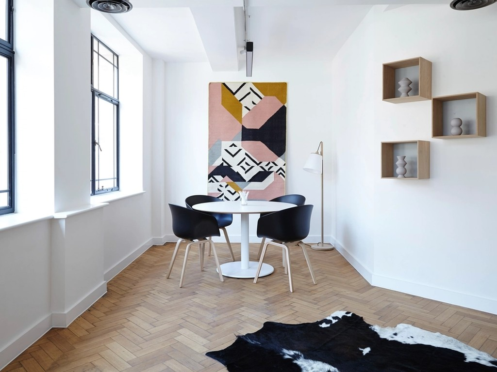
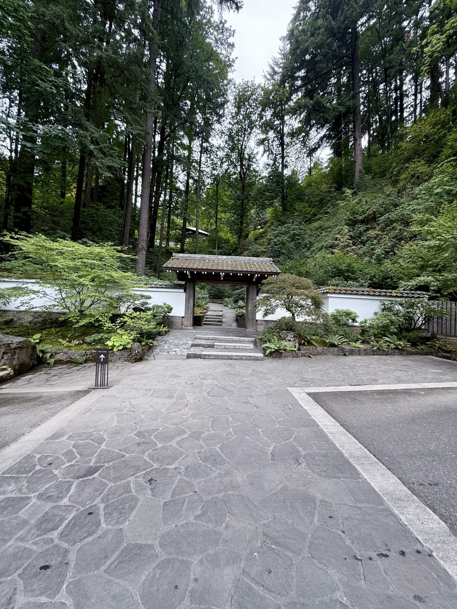

現地そのままの味付け
レモン、ナンプラー、唐辛子を効かせた酸味と辛みは、現地の食卓そのもの。
ムー マナオ（タイ風豚しゃぶサラダ）は、生野菜がたっぷり食べられるスッパ辛い一皿として好評です。
Google評価 4.7（口コミ33件）
紫陽花の季節も、そうでない日も。松戸・殿平賀で、モールとはひと味ちがう本格タイ料理を。

お店紹介／コンセプト
本土寺の参道入り口、隣に行列のできるラーメン店が目印の一角に、タイキッチン THAPTHIMはあります。
紫陽花で知られる本土寺を歩いたあと、するっと立ち寄れる気軽さがありながら、味は現地そのもの。
「モールにあるタイレストランとは違う現地の味」という声をいただくのは、日々の仕込みを大切にしている何よりの証です。
店内は白を基調としたシンプルな空間に、タイの写真が飾られ、明るい雰囲気。
参道の静けさを抜けた先で、賑やかなタイの食卓が待っています。
こだわり
レモン、ナンプラー、唐辛子を効かせた酸味と辛みは、現地の食卓そのもの。
ムー マナオ（タイ風豚しゃぶサラダ）は、生野菜がたっぷり食べられるスッパ辛い一皿として好評です。
「どれも美味しかったけど、手作りソーセージがお勧め」との声をいただく看板の一品。
一つひとつ手をかけた味わいを、ぜひ現地の味と一緒にお楽しみください。
カオ ガパオには、辛さ調整用のナンプラーが小皿で添えられます。
かけると辛さが増すだけでなく、ちょっとした味変にもなると好評。辛いものが得意な方も、少し苦手な方も、自分の一皿に仕上げられます。
配膳・お会計を担当するスタッフの、笑顔で気持ちの良い対応も好評をいただいています。
料理だけでなく、店内で過ごす時間そのものを心地よくお迎えします。
お客様の声
紫陽花で有名な本土寺参道入り口にあるタイ料理店。紫陽花寺を楽しんだ帰りにランチで立ち寄りました。
来店のお客様より
隣は行列のできるラーメン店ですが、こちらはするっと入れて、タイ料理好きにはきっと気に入ってもらえる味です。
モールにあるタイレストランとは違う、現地そのものの味。どれも美味しかったですが、手作りソーセージは特におすすめです。
常連のお客様より
ムー マナオはレモン・ナンプラー・唐辛子が効いていてスッパ辛くて美味しい。Instagramで紹介されていたグリーンカレーも絶品で、辛さは控えめ、ココナッツミルクの味わいが素晴らしい一杯でした。カオ ガパオは辛さ調整用のナンプラー付きで、ポーピアトォー（揚げ春巻き）も甘辛ソースで一気にタイの味に。店内は白基調で明るく、配膳・会計スタッフの対応も気持ちよかったです。
メニューを詳しく楽しまれたお客様より
LINE登録で事前予約ができ、テイクアウトも便利でした。盛りが良く、値段も手頃に感じます。グリーンカレーが美味しく、パパイヤサラダはパンに挟んでも美味しかったです。店員さんがにこやかで優しいのも嬉しいポイントでした。
テイクアウト利用のお客様より
アクセス・立地
〒270-0004 千葉県松戸市殿平賀72番地
目印は本土寺参道入り口付近、隣に行列のできるラーメン店です。
紫陽花の季節（6月頃）に本土寺を訪れた帰り道、そうでない季節のお出かけの折にも、気軽に立ち寄っていただける立地です。

ご予約・テイクアウト
テイクアウトのご予約は、LINE公式アカウントでの事前予約が便利です。
事前にご連絡いただくことで、受け取り時のお待たせを減らせます。
営業時間：準備中
お電話でのお問い合わせ：準備中（現在はLINEでのご案内を主軸としております）
Instagram連携
グリーンカレーがInstagramで紹介されたことをきっかけに、人気メニューのひとつになりました。
お料理の様子は、Instagramでもご紹介しています。